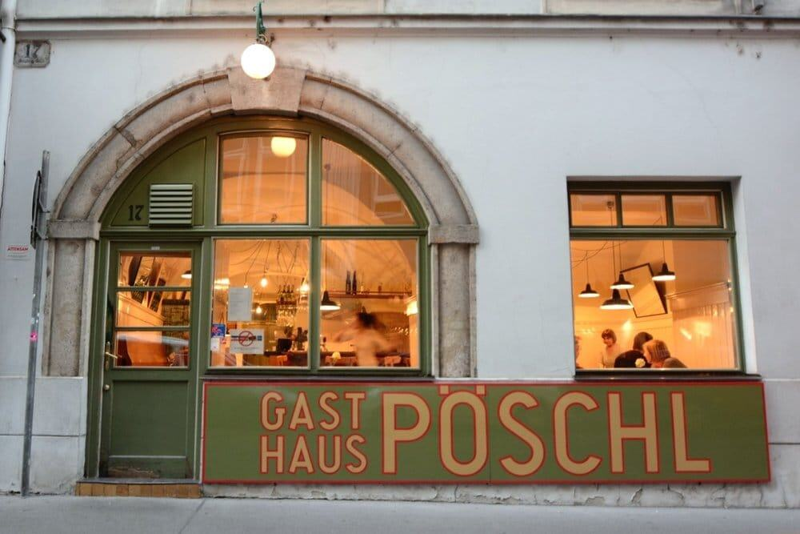
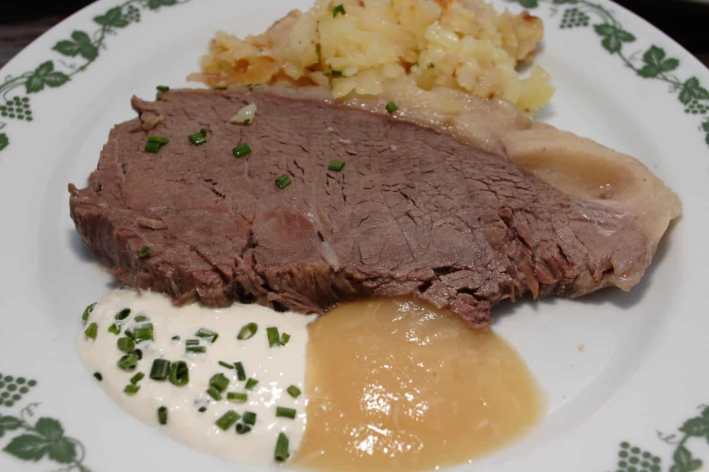
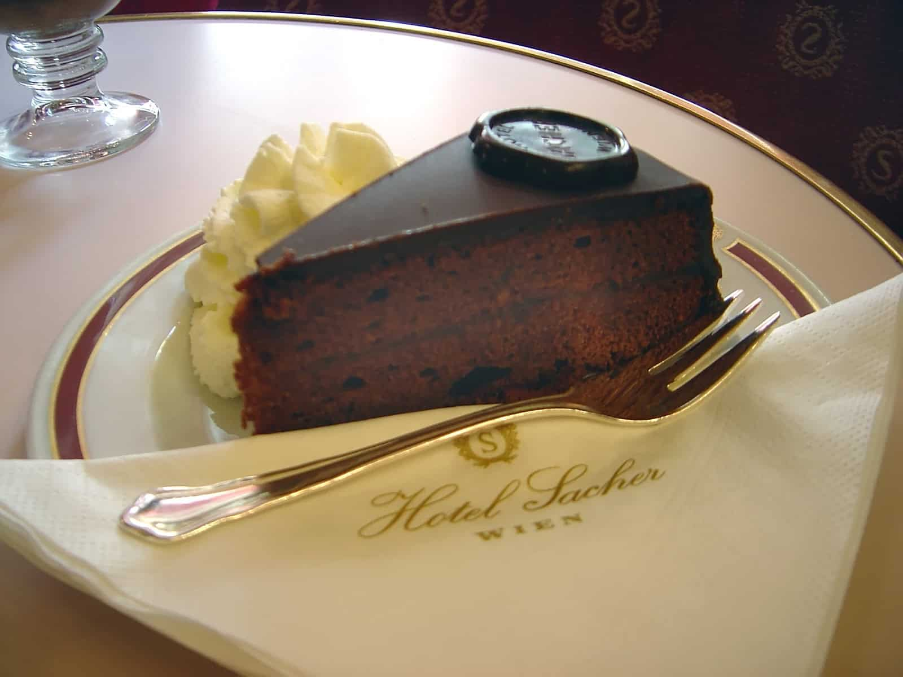

While Vienna might not be well known for it's food, The city offers a pleasant culinary suprise for many travellers
Here is our selection of some of the top restaurants in Vienna and the dishes the city is known for
Top restaurants in Vienna
1. Figlmüller

Home of the Famous Schnitzel
Figlmüller is one of Vienna’s most iconic eateries, beloved for its enormous, crisp, pan-fried schnitzel that nearly spills over the plate. It’s casual, lively, and perfect for first-time visitors wanting a classic Austrian meal. Portions are generous, service is quick, and the central location near St. Stephen’s Cathedral makes it easy to fit into any sightseeing plan.
2. Café Central

Grand Viennese Café Experience
Café Central offers a beautiful step back into old Vienna, with marble columns, vaulted ceilings, and a menu full of traditional dishes and pastries. It's tourist-friendly without feeling gimmicky, and ideal for trying classics like goulash or indulging in world-class desserts. Despite its popularity, the atmosphere remains elegant and welcoming, making it a memorable stop for lunch, dinner, or an afternoon coffee.
3. Gasthaus Pöschl

Cozy, Authentic Austrian Cooking
Tucked in a charming square near the city center, Gasthaus Pöschl offers hearty, traditional Viennese dishes in a relaxed, intimate setting. The menu highlights comfort food favorites such as schnitzel, beef goulash, and seasonal Austrian specialties. It’s a great pick for visitors looking to avoid overly touristy spots while still enjoying warm hospitality and seriously satisfying local cuisine.
Top dishes in Vienna
1. Wiener Schnitzel

Vienna’s Culinary Signature
No dish represents Vienna more than Wiener Schnitzel—golden, crisp, and perfectly airy. Traditionally made from veal, though pork versions are common, it’s served with lemon and potato salad or parsley potatoes. Nearly every traditional restaurant prepares it, making it an essential taste of Viennese comfort cuisine and a must-try for any visitor exploring the city’s food culture.
2. Tafelspitz

Slow Cooked Imperial Classic
A long-standing favorite of Emperor Franz Joseph, Tafelspitz features tender beef simmered in broth and served with vegetables, potatoes, and the famous apple-horseradish sauce. It’s a humble yet elegant dish that showcases the warm, hearty side of Austrian cooking. Many traditional restaurants serve it, offering visitors a delicious glimpse into Vienna’s imperial culinary traditions.
3. Sachertorte

Vienna’s Most Iconic Dessert
Sachertorte is a dense, dark chocolate cake layered with apricot jam and sealed with a glossy chocolate icing. Invented in 1832 and still served in cafés across the city, it embodies Vienna’s rich coffeehouse tradition. Paired with a dollop of lightly sweetened whipped cream, it strikes a perfect balance and is the ideal sweet finish to any day of sightseeing.